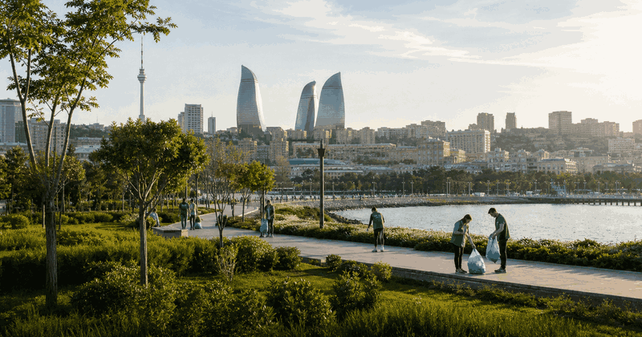
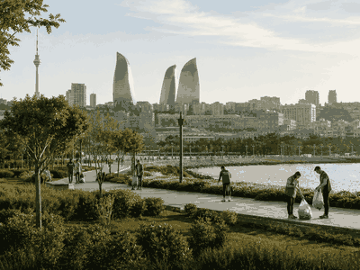

sustainability event view
World Environment Day
World Environment Day keeps the evergreen overview and current edition details together in this framed event view.
FrequencyRecurring
Current edition2027
Main cityWorldwide
FormatUN environment observance
History viewEdition details in one place
Use the year switcher for recent editions. Date, venue, ticket and programme updates stay inside the same event URL.

More SustainabilityInterested in more sustainability?Explore related events, places and calendar moments.